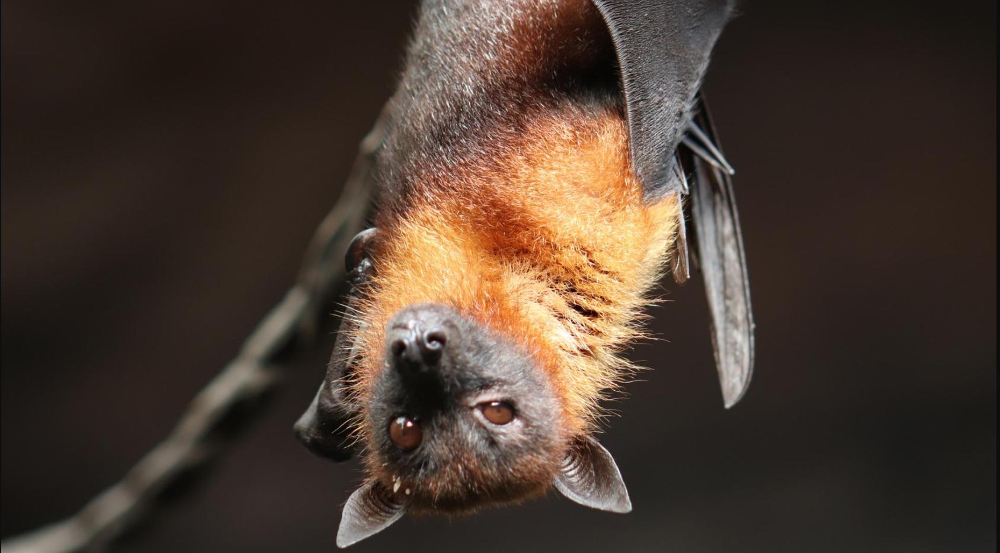
Alucard
Alucard é um morcego que tenta manter a fama de filho do Drácula, mas na real só quer é dormir de cabeça pra baixo o dia todo. Vive tentando ser assustador, mas acaba mais parecendo um preguiçoso noturno que só aparece pra causar confusão. Precisa de um lar que entenda suas manias noturnas e seu jeitinho meio vampiro cansado, Adote o Alucard e ganhe um amigo que é uma mistura de lenda sombria com preguiça total — perfeito pra quem curte companhia que aparece só quando quer.
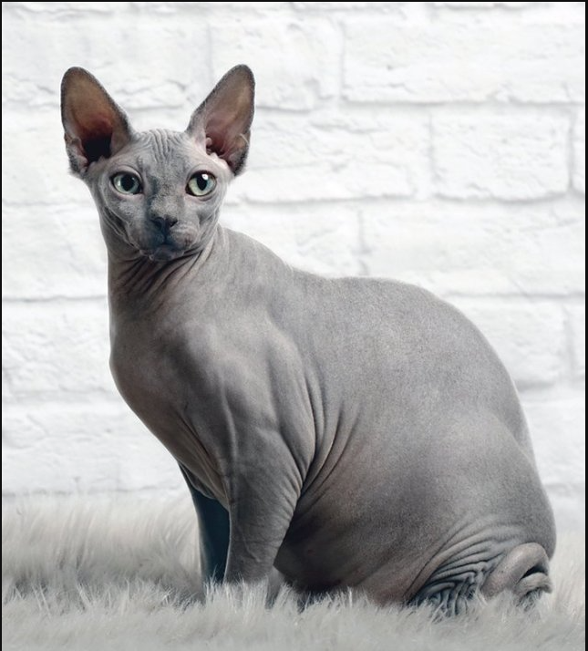
Bills
Bills pode até ser pelado, mas não se engane: ele é o verdadeiro Deus da Destruição — só que dos móveis, cortinas e paciência dos donos. Tem um jeitão imponente, mas no fundo é só um gatinho birrento que adora causar o caos. Precisa de um lar que tenha coragem de enfrentar seu poder destrutivo e seu olhar que manda calar a boca, Adote o Bills e ganhe um companheiro que vai dominar sua casa... e seu coração (se sobreviver aos arranhões).
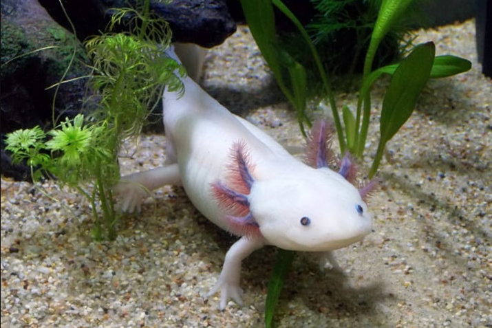
Bozo
Bozo é um axolote que, assim como o nome, parece piada pronta — meio estranho, meio bizarro, e cheio de cara de quem não sabe direito o que tá fazendo aqui. Vive no limbo entre ser fofo e causar arrepios. Precisa de um lar que entenda essa mistura de “meu Deus, que isso?” com “quero abraçar mesmo assim”, Adote o Bozo e ganhe um amigo único, daqueles que você mostra pra todo mundo só pra ver a reação.
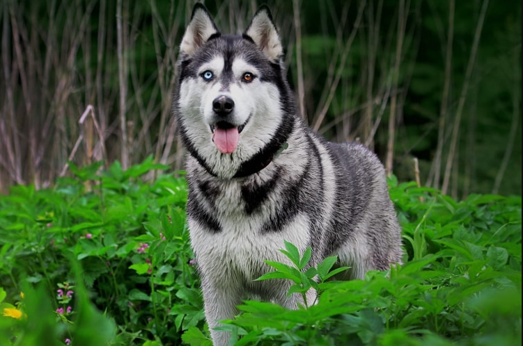
Ice
Ice é aquele husky que parece um príncipe do gelo, mas na real é mestre em fazer drama por qualquer coisa — desde um copo d’água até uma brisa fria. Vive fingindo que é durão, mas chora igual criança quando não ganha atenção. Precisa de um lar que tenha paciência para seu ego gelado e seus ataques de “drama queen", Adote o Ice e ganhe um amigo que é frio por fora, mas que sabe como ninguém derreter seu coração (quando quer).
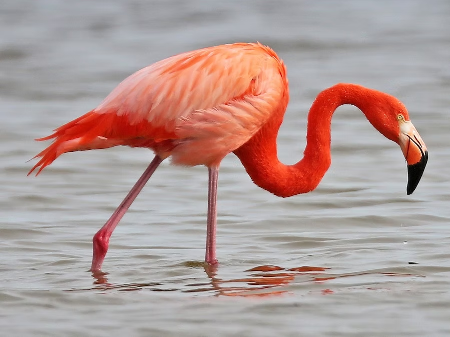
Mengao
Mengão é um flamingo cheio de estilo que não sabe perder — afinal, com o VAR roubando pra ele, vitória é quase garantida. Vive dando aquela sambadinha na cara dos adversários, sempre com um juiz amigo pra ajudar. Precisa de um lar que tolere toda essa ostentação e os chororôs dos rivais, Adote o Mengão e ganhe um amigo que sabe se garantir dentro e fora do campo — com ajuda ou sem ela.
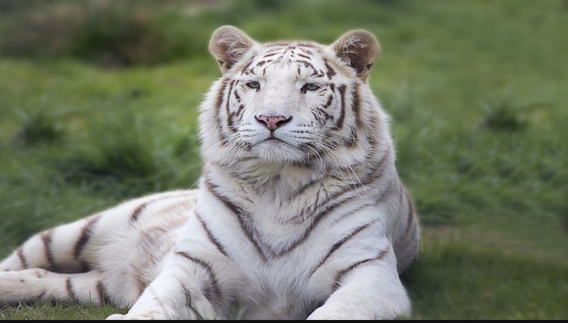
Nevasca
Nevasca é um tigre branco que todo mundo fala que existe, mas ninguém nunca viu direito. Vive mais no mundo da fantasia do que na realidade, tipo aquele jogador que promete e nunca entrega. Precisa de um lar que aguente esperar milagres e saiba lidar com a frustração de ter um amigo que é só papo — e pelo branco que some na neve, nem sempre aparece, Adote a Nevasca e ganhe um companheiro misterioso que é bom de história, mas meio ruim de presença.
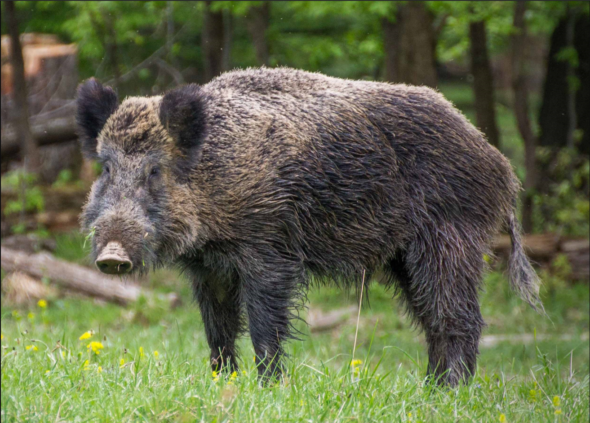
Parmeras
Javali Parmera é um porco guerreiro que luta todo dia, mas que nunca conseguiu conquistar o título mais sonhado — o Mundial. Vive numa eterna expectativa, meio perdido entre as suas derrotas e a esperança de um dia sair da fila. Precisa de um lar que entenda a frustração crônica e o espírito incansável de quem nunca desiste, mesmo quando já virou piada, Adote o Javali Parmera e ganhe um amigo que é pura raça, mas que sabe bem o gosto amargo da fama de “sem Mundial” — perfeito pra quem tem coração forte e muito senso de humor..
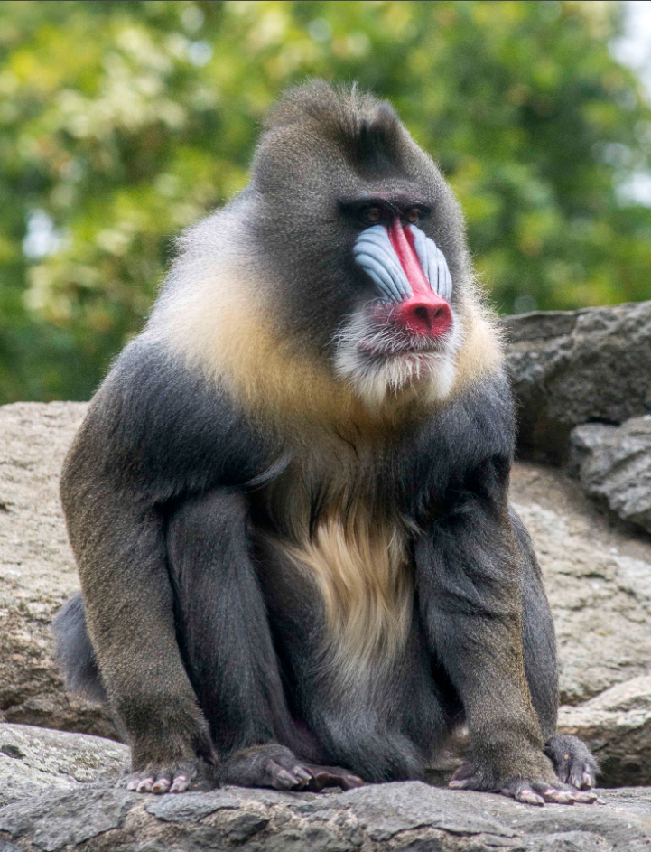
Rafiki
Rafiki é aquele macaco que parece que sabe tudo, mas na real vive meio perdido no tempo e na própria cabeça — tipo aquele tio que fala besteira nas reuniões de família. Vive com um jeito místico, mas quase sempre tá mais pra maluco varrido do que guru. Precisa de um lar que aceite suas filosofias confusas, conversas com gravetos e ocasional “macumba” pra resolver os problemas, Adote o Rafiki e ganhe um amigo que é uma mistura de sábio com doidão — ótimo pra quem curte companhia com uma pitada de loucura e filosofia duvidosa. .
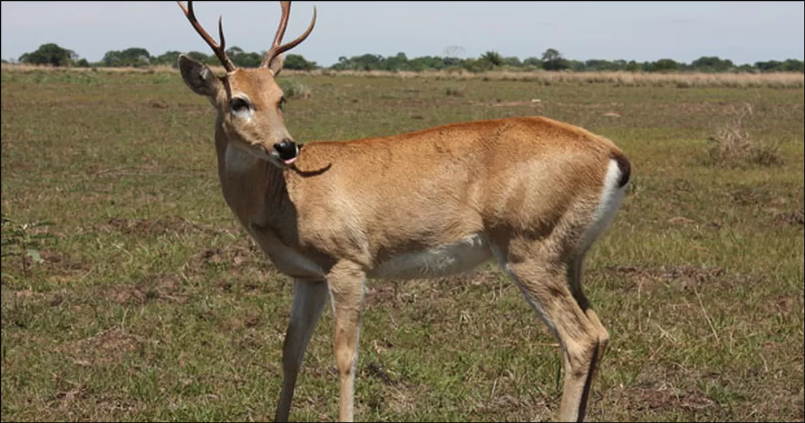
Saopaulera
SãoPaulera é um veado que se orgulha do passado — afinal, igual ao time de mesmo nome, ele vive de museu e das glórias que já foram. Hoje, sua especialidade é passar vergonha e correr pra trás, mas ainda insiste em achar que é craque. Precisa de um lar que tenha paciência para seu drama e a zoeira dos rivais, Adote o SãoPaulera e ganhe um amigo que é especialista em nostalgia e em fazer papel de bobo — mas que no fundo é difícil de largar.
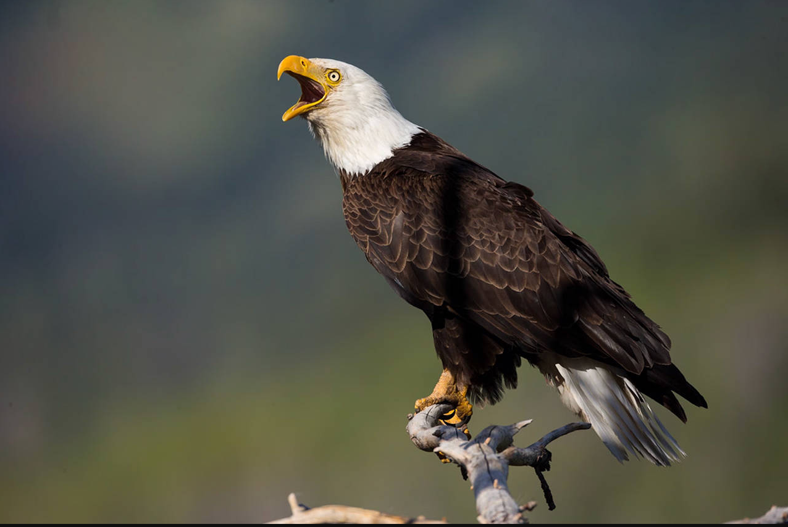
Steve
Steve é uma águia americana que voa alto, mas só quando tem plateia. Vive se achando o símbolo da liberdade, mas na prática só quer um lugar confortável pra tirar uma soneca. Precisa de um lar que aguente seu ego inflado e suas manobras dramáticas no ar, Adote o Steve e ganhe um amigo que é rei do espetáculo — mesmo que às vezes só seja por causa das suas manias exageradas.
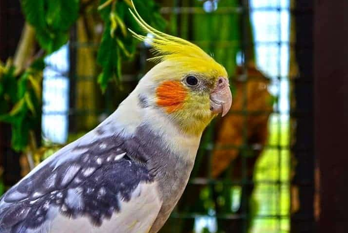
Zico
Calopsta Zico é um passarinho cheio de charme e habilidade, conhecido por seu talento nato — mas que às vezes se perde no caminho da vitória, igual ao verdadeiro Galinho de Quintino. Vive cantando alto e tentando ser o craque do terreiro, mas ainda falta aquele toque final pra dominar de vez. Precisa de um lar que apoie seu talento e tenha paciência para as quedas (e levantadas) do nosso pequeno astro, Adote a Calopsta Zico e ganhe um amigo que vai cantar pra você… e te surpreender com seus dribles de mestre (ou pelo menos tentar).

Sereio
Sereio é uma baleia que carrega história nas costas… e reumatismo nas nadadeiras. Já foi gigante nos oceanos, mas hoje só afunda devagar, igual ao time de mesmo espírito, o Santos. Vive contando histórias de quando fazia ondas, mas atualmente mal consegue um espirro de marola. Precisa de um lar que respeite sua idade, sua fragilidade e aceite que o auge ficou lá nos anos 60, Adote o Sereio e ganhe um companheiro que ainda se acha rei do mar — mesmo sendo só mais um peixe fora d’água nos dias de hoje.

{kind=link}
{kind=link}
{kind=link}
{kind=link}
{kind=link}
{kind=link}
{kind=link}
{kind=link}
{kind=link}
{kind=link}
{kind=link}